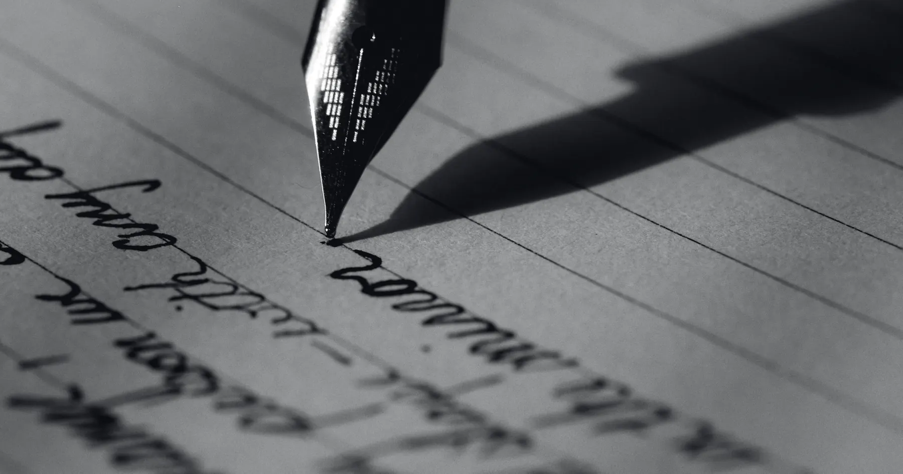
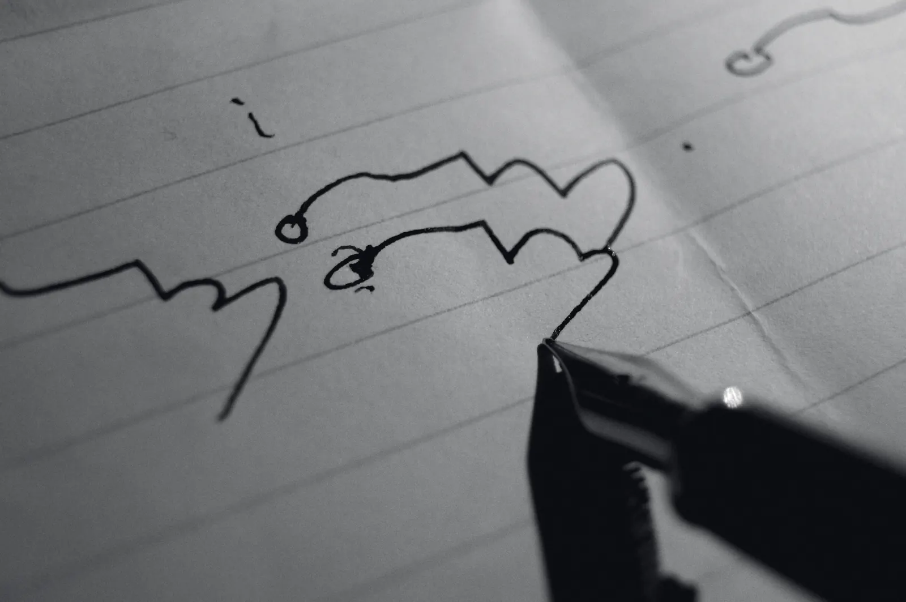
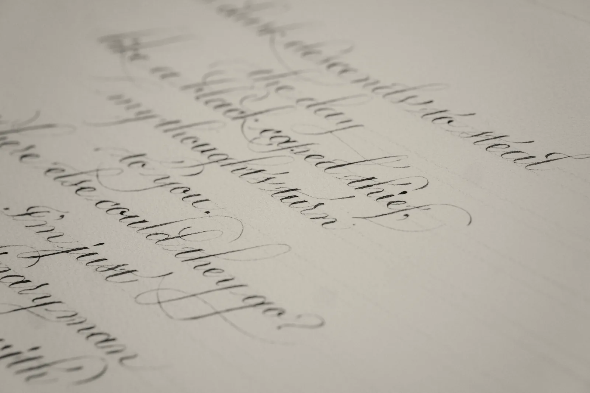
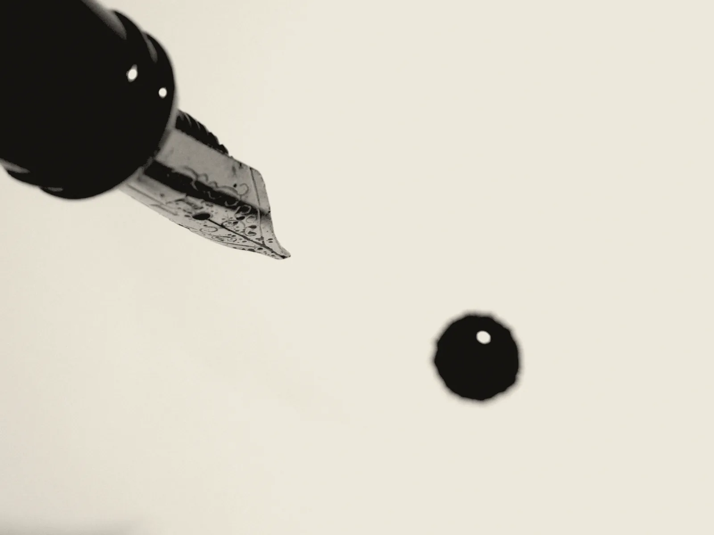
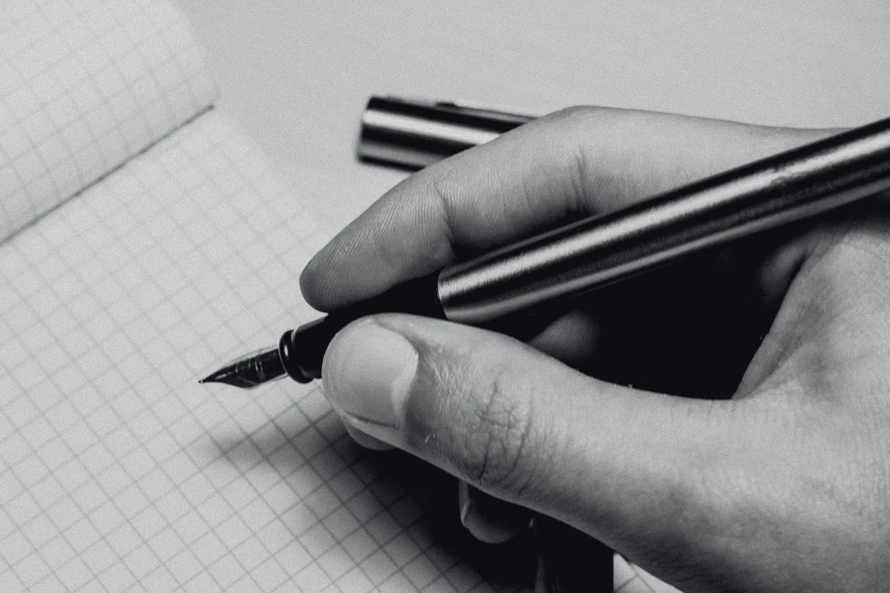

- Drawn at
- 10× · 1 mm = 10 px
- Measured
- 80 g/m², wet blue-black, 10× loupe
- Price
- included, whichever you choose
Six grinds. One nib.
A grind is the shape of the two ground faces of the tipping and the angle they meet the paper. Nothing else about the pen changes. Everything about the line does.

- Widths
- EF 0.4 · F 0.5 · M 0.6 · B 0.8 mm
- Angle
- 35° to 60°, any rotation
Round
The tipping is ground to a ball and polished. The line is the same width in every direction, so nothing about your hand shows in it — which is the point. It is the grind most people mean when they say a fountain pen, and it is the hardest to do well, because there is nowhere for a flat spot to hide.
Our extra-fine is 0.4 mm on the sheet, our broad 0.8. Between them the difference from one pen to the next is the thing this whole site is about; on ours it is held to a twentieth of a millimetre.
The line, at 10×
- Suits
- Any hand. Fast writers. Anyone who signs more than they write.
- Costs you
- No line variation at all. Your handwriting will look like your handwriting.

- Widths
- 0.7 · 0.9 mm
- Cross stroke
- about a third of the down
- Rotation
- forgives 10° either way
Stub
Ground flat across the writing edge, then the corners rounded off. Down strokes take the full width of the edge; cross strokes take only its thickness, about a third. Your letters get thick and thin without you doing anything, and because the corners are soft you can roll the pen ten degrees either way and it still writes.
The 0.7 is the one to start with. The 0.9 wants a hand that writes large and slow.
The line, at 10×
- Suits
- A hand that writes at 4 mm x-height or larger and holds the pen fairly steady.
- Costs you
- Speed. A stub asks you to slow down. Most people are glad of it.
- Widths
- 0.55 · 0.7 · 0.9 mm
- Cross stroke
- about a quarter of the down
- Rotation
- forgives 3° or 4°. No more.
Cursive italic
The stub with its corners left on — softened just enough not to catch the paper, and no further. The contrast between thick and thin is sharper, letters have real corners, and the grind is honest about your hand in a way the stub is not: three or four degrees of rotation and the edge lets you know.
The 0.55 is unusual and useful: italic contrast at a fine writer’s size, for people who want the letters without the width.
The line, at 10×
- Suits
- Handwriting you are proud of. Italic hands. Anyone who writes slowly on purpose.
- Costs you
- You will feel every rotation. Send us a page and we set the edge to the angle you already use.
- Width
- 0.25 mm
- Ink
- dry. A wet ink will pool.
- Paper
- hard and smooth, or it catches
Needlepoint
Ground to the smallest point that still carries ink, which on our sheet is a quarter of a millimetre — finer than a 0.3 mm pencil on a hard paper. It has feedback: you hear it, and you feel the tooth of the sheet through it. That is not a fault. It is what a point that size sounds like.
We grind more of these than you would guess. Ledgers, margins, pocket notebooks, and a lot of people whose handwriting is under three millimetres tall and always has been.
The line, at 10×
- Suits
- Small hands, x-height under 3 mm. Anyone who writes in the margins of other books.
- Costs you
- Glide. And it is particular about paper and ink; we will ask what you use.
- Widths
- 0.6 · 0.8 mm
- Cut
- 15° off square, to your angle
- Set from
- a page you send us
Left-foot oblique
A round or a stub edge cut fifteen degrees off square, for a hand that turns the pen inward as it writes. If you have ever worn one corner of a nib shiny and left the other dull, this is you, and the oblique puts the whole edge back on the paper where you actually hold it.
Fifteen degrees is the usual. We will grind to the angle you tell us, or, better, to the one we read off the strokes on a page you photograph with any pen at all.
The line, at 10×
- Suits
- Writers who rotate the pen anticlockwise: most right-handers who write from the shoulder, and many left-handed underwriters.
- Costs you
- It is yours. Nobody else’s hand will like it, and you should not lend it.
- Width
- 0.6 mm across · about 0.25 down
- Angle
- the fussiest of the six
Architect
The italic turned through ninety degrees: down strokes thin, cross strokes broad. It is named for the hand that letters drawings, and on block capitals nothing else comes close — every horizontal lands heavy, every vertical is a hairline, and a page of it looks set rather than written.
It is the fussiest grind we do about angle, and the one we most often ask for a page before cutting.
The line, at 10×
- Suits
- Capitals. Printing. Anyone who has lettered a drawing and misses it.
- Costs you
- Cursive looks wrong in it, and it will tell you if your angle drifts.
- Flex
- no
- Music, 3-tine
- no
- Anything under 0.25
- no

Flex is pressure. Ours is edge.
Line variation from pressure is a pointed pen’s trick: the tines spread under the hand and the line swells. A modern 14k nib pushed for it springs, and then stays sprung. So we don’t sell it. Every grind on this page gets its thick and thin from the shape of the edge and the angle you hold it, with no more pressure than the pen’s own weight.
We also measure every width with one ink on one paper — a wet blue-black on 80 g/m² — and say so. A dry ink writes a size narrower; a soft, absorbent sheet writes a size wider. Tell us what you use and we will measure in that instead.

- You need
- a ruler, and a page you wrote
- Time
- two minutes
Measure your x-height, then pick.
Write a line with any pen. Measure the height of a lowercase x in millimetres. That number decides more than anything else.
- Under 3 mm
Extra fine, needlepoint, or the 0.55 cursive italic if you want letters with corners.
- 3 to 4 mm
Fine or medium round, or the 0.7 stub. This is most people.
- Over 4 mm
Broad round, the 0.9 stub, or the 0.9 cursive italic.
- One corner of your old nib is shiny
You rotate the pen. Add oblique to any of the above and send us the page.
- You print in capitals
Architect. Nothing else will do what you are asking for.
- Still not sure
Order the 0.7 stub. Within a year, once, we regrind it free to whatever the first one taught you.
